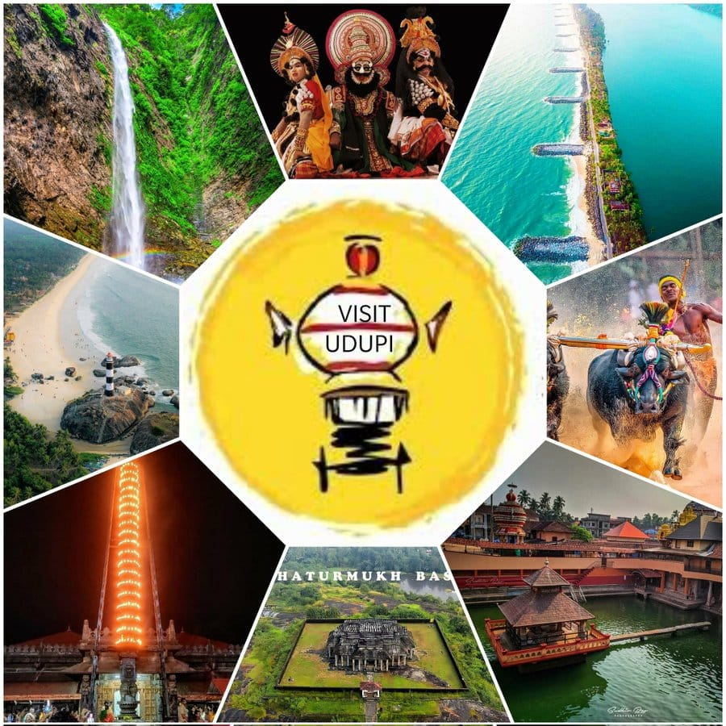
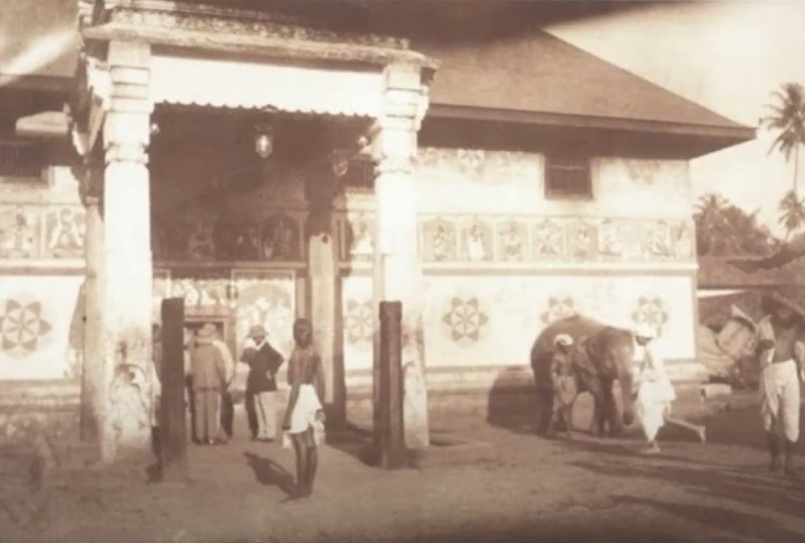
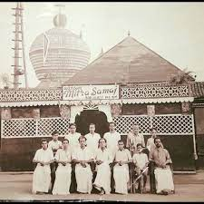
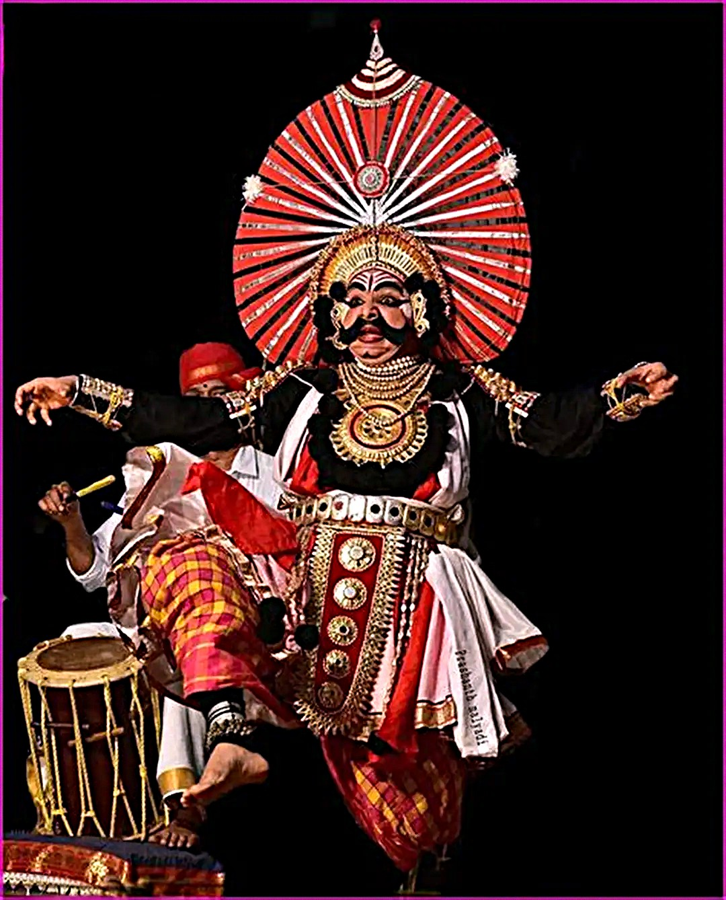
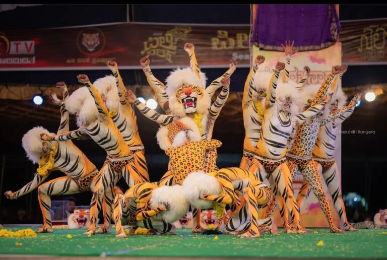
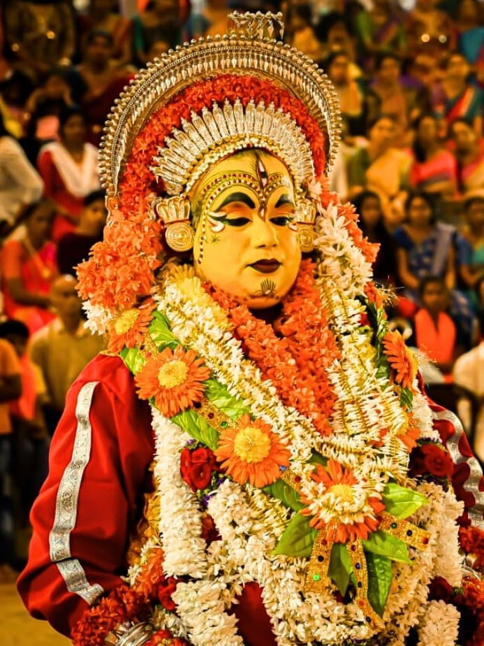
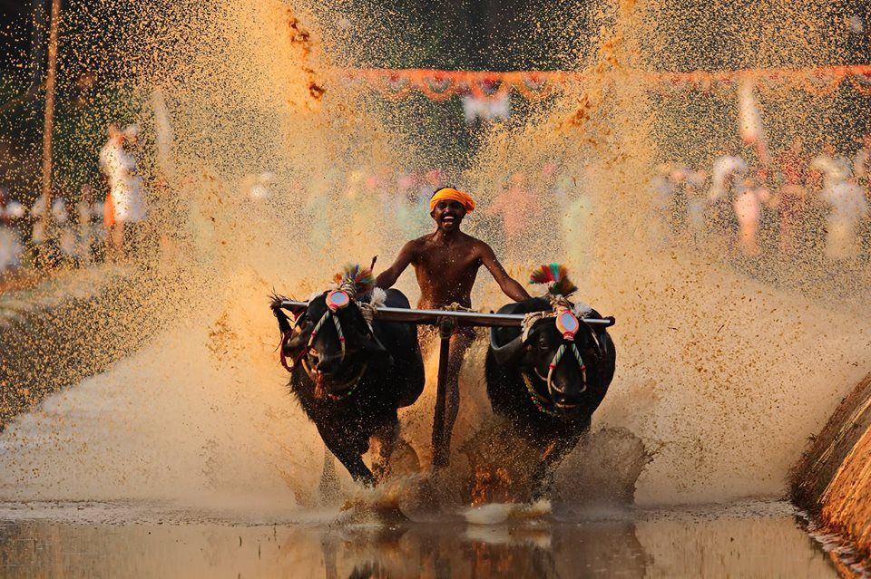
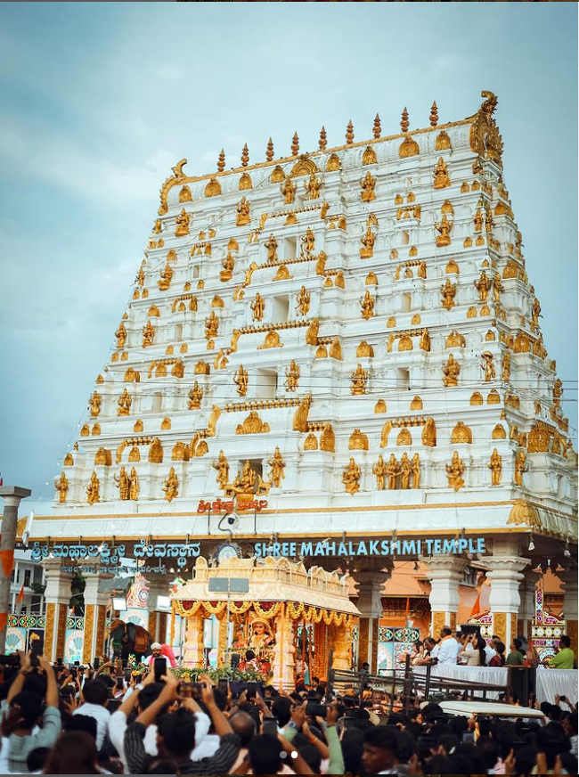
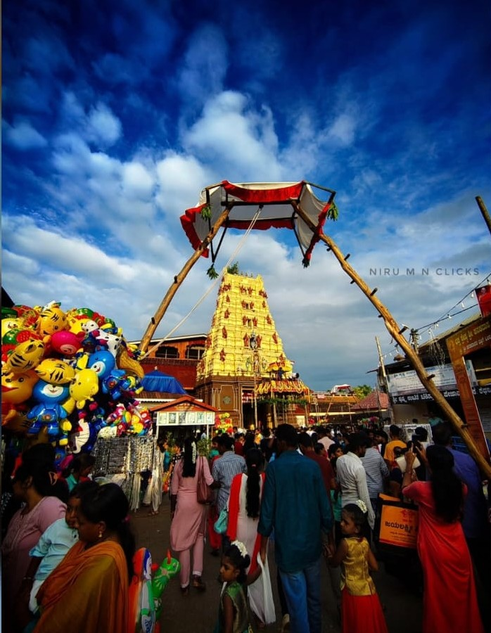

About Udupi
The Temple Town where divinity meets coastal beauty, creating a unique cultural tapestry
Discover Udupi's Magic
Nestled between the Western Ghats and the Arabian Sea, Udupi is more than just a destination - it's an experience that touches your soul. Founded around the 13th century by Saint Madhvacharya, this sacred town has been a beacon of spiritual wisdom and cultural richness for over eight centuries.
Known as the temple city of Karnataka, Udupi is home to the famous Sri Krishna Temple, which attracts millions of devotees annually. But beyond its spiritual significance, Udupi boasts pristine beaches, unique art forms, and a culinary tradition that has conquered hearts worldwide.
What makes Udupi truly special is its perfect blend of ancient traditions and modern education, with institutions like Manipal University making it a hub of learning while preserving its cultural roots.

Udupi History — Monoliths of Time
-
13th Century

Spiritual Foundation
Saint Madhvacharya establishes the Sri Krishna Temple and the Dvaita school of philosophy, laying the town's spiritual bedrock.
-
14th – 16th C.
Golden Age of Learning
The monastic system (Ashta Mathas) matures, fostering deep Vedic scholarship and the flourishment of local temple arts and philosophical debates.
-
17th – 18th C.

Culinary Emergence
The specialized temple kitchens lay the groundwork for the globally renowned **Udupi Cuisine** (pure vegetarian), becoming an economic and cultural force.
-
19th Century
Colonial Influence
The British administration improves regional roads, increasing accessibility for pilgrims while the core religious and cultural customs remain firmly intact.
-
20th Century
Educational Revolution
The founding and rise of Manipal University (1953) transform Udupi into a major educational and urban hub, blending old with new global influences.
-
21st Century
Coastal Tourism Boom
Udupi earns global recognition as a tourism and heritage destination, focusing on sustainability and the preservation of its coastal and spiritual identity.
Unique Cultural Expressions
Discover the vibrant art forms that make Udupi's cultural tapestry so rich and diverse

Yakshagana
A spectacular night-long dance drama combining dance, music, dialogue, costume, makeup, and stage techniques. Performances depict stories from Hindu epics with elaborate costumes and vigorous dance movements that captivate audiences throughout the night.

Pili Nalike
A vibrant folk dance where performers dress as tigers, showcasing acrobatic movements and energetic choreography. Traditionally performed during festivals and special occasions to ward off evil spirits and bring prosperity to the community.

Bhuta Kola
A traditional ritualistic dance form where performers embody divine spirits. This ancient practice combines music, dance, and spiritual rituals to connect with ancestral spirits and seek their blessings for the community's wellbeing and prosperity.

Kambala (Buffalo Race)
Kambala is an annual buffalo racing festival held in water-filled paddy fields (or specially prepared slush tracks). Farmers race a pair of buffaloes, controlled by a plough-like mechanism, to honor the regional deities and celebrate the harvest season.
Vibrant Festivals & Celebrations
Experience the rhythm of Udupi through its colorful festivals that blend devotion with celebration

Uchila Mahalaxmi Temple Dasara
Grand 10-day celebration at the ancient Mahalaxmi Temple featuring special pujas, cultural programs, and a majestic procession with decorated chariots through the streets of Udupi.

Krishna Mutta's Vitla Pindi
Unique folk festival honoring Lord Vitthala with traditional music, dance performances, and elaborate processions through Udupi's streets, showcasing the region's rich cultural heritage.

Attur Church Festival
Annual feast at St. Lawrence Minor Basilica attracting thousands of devotees with special masses, processions, and vibrant cultural events that showcase Udupi's religious diversity.